El "Hello World"
del Internet of Things
En el desarrollo de software tradicional, el hito inicial es imprimir un "Hola Mundo" en la pantalla. En el entorno de los sistemas embebidos y el Internet of Things (IoT), este paradigma se traslada al mundo físico: lograr que un bloque de código altere un nivel de tensión eléctrica para encender un Diodo LED.
Los 4 códigos de esta guía hacen exactamente lo mismo en el mundo físico: hacer parpadear dos luces. Lo que cambia es el "cómo". Veremos la evolución desde un código de principiante (fácil de leer pero con fallos ocultos de rendimiento) hasta llegar a un código 100% profesional basado en Multiprocesamiento. En cada salto (refactorización), la dificultad visual del código aumenta, pero a cambio ganamos máxima eficiencia.
01 Hardware y Electrónica Básica
Tensión Lógica GPIO
Los pines GPIO de la Raspberry Pi operan bajo una lógica digital de 3.3 Voltios. Puesto que un diodo LED estándar rojo o amarillo necesita mucho menos voltaje (aprox. 2V) y el microprocesador tiene un límite de corriente muy estricto (aprox. 16mA por pin), conectar el LED directamente provocaría un Cortocircuito que quemaría los circuitos internos de la placa.
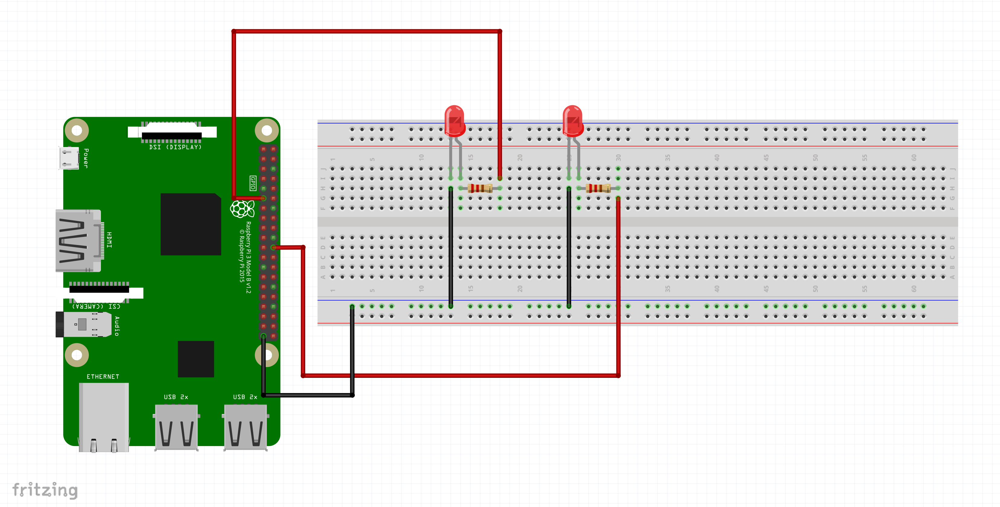
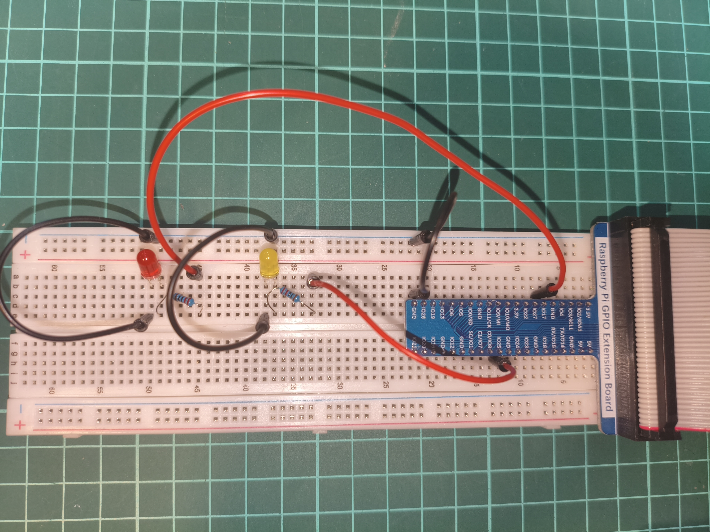
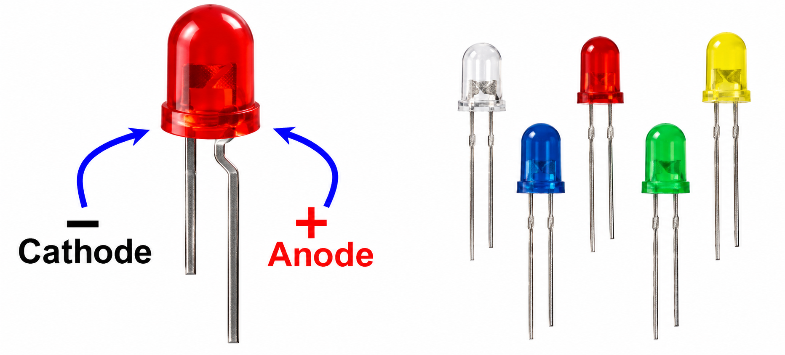
02 Ejecución Síncrona y Funciones
Para programar la placa utilizamos la nomenclatura BCM. Primero guardamos los números de los pines en variables, y luego abstraemos (empaquetamos) las órdenes de encendido y apagado dentro de una función para no repetir código.
El cuello de botella: Todo el código ocurre dentro de un bucle infinito. El problema técnico aquí es que la orden time.sleep() provoca un bloqueo síncrono. La CPU detiene su reloj y se queda congelada esperando a que pase ese segundo, imposibilitando que el sistema pueda atender cualquier otra tarea.
import RPi.GPIO as GPIO
import time
# Declaración de variables globales
led1 = 17
led2 = 25
pausa = 1
# Definición de función para agrupar lógica
def estat(estat1, estat2, delay):
GPIO.output(led1, estat1)
GPIO.output(led2, estat2)
time.sleep(delay) # PUNTO DE BLOQUEO: La CPU se congela aquí
GPIO.setmode(GPIO.BCM)
GPIO.setup([led1, led2], GPIO.OUT)
try:
while True: # Bucle infinito principal
estat(GPIO.HIGH, GPIO.LOW, pausa)
estat(GPIO.LOW, GPIO.HIGH, pausa)
except KeyboardInterrupt:
# Excepción para liberar pines si el usuario presiona Ctrl+C
GPIO.cleanup()
Traduciendo el código al humano:
import: Imagina que vas a cocinar. Esta palabra sirve para sacar herramientas del cajón (librerías) que alguien ya fabricó por nosotros, como las herramientas para controlar el tiempo (`time`) o los pines (`RPi.GPIO`).def: Significa "definir". Se usa para escribir una receta nueva que podremos usar más tarde escribiendo solo su nombre (en este caso, la receta `estat` que enciende o apaga las luces).while True:: Literalmente significa "mientras sea verdad" (o sea, para siempre). Todo lo que pongas debajo (indentado con espacios) se repetirá en bucle hasta el fin de los tiempos.try... except:: Es un plan de emergencia. Intenta (`try`) ejecutar el bucle, pero si ocurre una excepción o error (`except`) como que el usuario pulse Ctrl+C, ejecuta un comando seguro para apagar todo (`GPIO.cleanup`).
Resultado Físico (Flujo Síncrono)
03 Time Slicing (Polling y Tiempos)
Para resolver la congelación del sistema, evitamos usar sleep y pasamos a una técnica llamada Time Slicing (Polling).
Fundamento técnico: El bucle gira a toda velocidad continuamente. En cada vuelta, consultamos la hora exacta del reloj (time.time()) y calculamos la diferencia de tiempo respecto a la última vez que encendimos el LED. Si la diferencia matemática supera nuestro intervalo límite, cambiamos el estado del LED. Esto simula que hacemos dos cosas a la vez en un solo flujo.
import RPi.GPIO as IO
import time
pin_led1 = 17; pin_led2 = 25
interval_led1 = 5; interval_led2 = 1
IO.setmode(IO.BCM)
IO.setup([pin_led1, pin_led2], IO.OUT)
# Registro de la marca temporal inicial (pasado)
last_time_led1 = time.time()
last_time_led2 = time.time()
try:
while True:
current_time = time.time() # Consulta al reloj (presente)
# Evaluación matemática: ¿Presente - Pasado es mayor al intervalo?
if current_time - last_time_led1 >= interval_led1:
IO.output(pin_led1, not IO.input(pin_led1))
last_time_led1 = current_time # Guardamos el nuevo pasado
if current_time - last_time_led2 >= interval_led2:
IO.output(pin_led2, not IO.input(pin_led2))
last_time_led2 = current_time
# Retardo microscópico para no sobrecalentar el procesador al 100%
time.sleep(0.01)
except KeyboardInterrupt:
IO.cleanup()
Traduciendo el código al humano:
time.time(): Este comando mira el reloj interno del ordenador y te da la hora exacta en ese preciso milisegundo. Lo usamos para guardar recuerdos del pasado y compararlos con el presente.if: Significa "Si...". Es una condición. Le decimos a la máquina: "Si el tiempo presente menos el tiempo pasado es mayor al intervalo que yo he fijado, entonces entra y ejecuta el código que hay debajo".not: Es un negador. Si algo está encendido, el `not` lo apaga. Si está apagado, lo enciende. Es el truco perfecto para alternar el LED sin escribir dos órdenes diferentes.
Resultado Físico (Time Slicing)
04 Concurrencia: Multithreading
Elevamos la complejidad arquitectónica. Ahora le pedimos a una librería nativa (`threading`) que separe nuestras tareas. Creamos Hilos. Ambos operan a la vez pero comparten la misma memoria RAM.
El problema del candado en Python: Python tiene un candado interno llamado GIL. Este candado impide matemáticamente que dos hilos piensen (evalúen código) en el mismo instante. Afortunadamente, cuando le decimos a un hilo que haga una pausa (time.sleep()), este suelta temporalmente el candado, permitiendo que el otro hilo funcione.
Hilos Demonio
Asignar daemon=True significa que los hilos secundarios mueren instantáneamente si el hilo principal muere. Si no hiciéramos esto, al pulsar Ctrl+C el programa principal se cerraría, pero los hilos seguirían existiendo como fantasmas encendiendo LEDs para siempre.
import RPi.GPIO as IO
import time
import threading
pin_led1 = 17; pin_led2 = 25
IO.setmode(IO.BCM)
IO.setup([pin_led1, pin_led2], IO.OUT)
# Función objetivo para el Hilo 1
def led1_blink():
while True:
IO.output(pin_led1, not IO.input(pin_led1))
time.sleep(5) # Se suelta el candado GIL aquí
# Función objetivo para el Hilo 2
def led2_blink():
while True:
IO.output(pin_led2, not IO.input(pin_led2))
time.sleep(1)
# Se crean los hilos (como dos trabajadores paralelos)
fil_1 = threading.Thread(target=led1_blink, daemon=True)
fil_2 = threading.Thread(target=led2_blink, daemon=True)
try:
fil_1.start(); fil_2.start()
# El programa principal se queda vigilando
while True:
time.sleep(1)
except KeyboardInterrupt:
IO.cleanup()
Traduciendo el código al humano:
threading.Thread(...): Literalmente "Hilo de ejecución". Con esta línea estamos contratando a un cocinero virtual extra y le estamos dando como `target` (objetivo) una de las recetas que definimos arriba con `def`..start(): Los hilos no trabajan solos al crearlos. Con esta orden les damos el pitido de salida para que empiecen a cocinar en paralelo.daemon=True: Etiqueta al hilo como un "demonio" o tarea en la sombra. Si el jefe principal (nuestro programa) se va a casa (se detiene), los demonios se destruyen solos inmediatamente.
Resultado Físico (Multithreading)
05 Paralelismo: Multiprocessing
Para romper del todo el candado de Python y forzar a la computadora a hacer cálculos al mismo exacto milisegundo aprovechando los diferentes núcleos de la placa, debemos utilizar Procesos en lugar de hilos.
Clonación del Sistema (Forking)
Esta técnica le pide al Kernel de Linux que clone el programa base. Crea programas "hijo" completamente blindados e independientes. Cada uno tiene su propia memoria y su propia identidad, lo que garantiza un paralelismo puro.
import RPi.GPIO as IO
import time
import multiprocessing
pin_led1 = 17; pin_led2 = 25
def led1_blink():
while True:
IO.output(pin_led1, not IO.input(pin_led1))
time.sleep(5)
def led2_blink():
while True:
IO.output(pin_led2, not IO.input(pin_led2))
time.sleep(1)
# Protección obligatoria para evitar que los clones se clonen a sí mismos infinitamente
if __name__ == '__main__':
IO.setmode(IO.BCM)
IO.setup([pin_led1, pin_led2], IO.OUT)
# Bifurcación: Asignación de procesos independientes
proc_1 = multiprocessing.Process(target=led1_blink)
proc_2 = multiprocessing.Process(target=led2_blink)
try:
proc_1.start(); proc_2.start()
# El programa padre bloquea su avance hasta que los hijos terminen
proc_1.join(); proc_2.join()
except KeyboardInterrupt:
# Clausura forzosa de los subprocesos aislados
proc_1.terminate()
proc_2.terminate()
IO.cleanup()
Traduciendo el código al humano:
multiprocessing.Process: Parecido al hilo, pero más fuerte. Aquí no contratamos a un cocinero extra, sino que construimos una cocina completamente nueva y clonada donde enviar a alguien a trabajar con seguridad total.if __name__ == '__main__':: Esta línea tan rara es un guarda de seguridad. Le dice al ordenador: "Asegúrate de que este archivo es el original que estoy ejecutando y no un clon, antes de empezar a crear clones infinitos". Evita que el programa se copie a sí mismo hasta reventar el ordenador..join(): Significa "unirse". Es una barrera que le dice al programa padre: "No sigas leyendo líneas hacia abajo, quédate aquí pausado y espera a que los procesos hijos terminen su trabajo para unirse a ti".
Resultado Físico (Multiprocessing)
06 Gestión de Errores, Procesos Huérfanos
El sistema operativo (Linux) es como un vigilante de seguridad muy estricto. Si tu programa de Python le pide permiso para usar una puerta física (un pin GPIO), el vigilante anota en su libreta que esa puerta está ocupada. Si tu programa sufre un cierre anómalo y no avisa al vigilante de que ya ha terminado, la puerta se queda bloqueada para siempre. Esto es lo que genera un "proceso huérfano" y provoca los temidos errores de 'GPIO not allocated' o 'GPIO busy' al intentar ejecutar un código de nuevo.
Ctrl + C (Interrupción Limpia)
Envía una señal IPC llamada SIGINT. Es como decirle al programa: "Por favor, recoge tus cosas y vete".
El código detecta esta petición educada activando su excepción KeyboardInterrupt. Esto nos da los milisegundos necesarios para ejecutar GPIO.cleanup(), lo que avisa al vigilante (Linux) para que libere los pines físicos antes de cerrar todo.
Ctrl + Z (El Peligro de Pausar)
Envía una señal llamada SIGTSTP. ¡Cuidado! Esta orden no cierra el programa, lo congela de golpe y lo esconde en la memoria de fondo.
Como el programa no se ha cerrado, jamás ejecuta la limpieza. Los LEDs mantienen su último estado (encendidos, consumiendo electricidad) y los pines quedan secuestrados por el programa fantasma. Si ejecutas otro script, Linux te dirá que los pines ya tienen dueño.
Protocolo de Rescate (Debug) en la Terminal
Si has pulsado Ctrl+Z por error, o se ha cortado la luz o la conexión SSH de golpe, tus pines están secuestrados. No debes desenchufar la máquina, debes usar estos comandos en la terminal de Linux para dar caza al proceso culpable:
-
1Identificar al fantasma (Buscar el PID)
ps aux | grep python -
2Cierre educado (Emular Ctrl+C remotamente)
kill -2 <PID> -
3Destrucción forzosa (El último recurso)
kill -9 <PID>Evapora el programa de la memoria de un plumazo. Los pines seguirán retenidos y cerrados. Sin embargo, la próxima vez que ejecutes un código nuevo verás un aviso
RuntimeWarning, indicando que ese nuevo código ha forzado la cerradura de la puerta y te ha devuelto el control.
Traduciendo los comandos de terminal al humano:
ps aux | grep python: "El Detective." Le pides a la máquina: "Enséñame todos los programas que están corriendo ahora mismo en tu memoria (ps aux), pero fíltralos a través de un colador ( | ) y muéstrame solo los que contengan la palabra 'python' (grep python)". Así descubres el número de carnet de identidad (PID) del programa que se quedó colgado.kill -2 <PID>: "La Carta de Despido." Significa "matar", pero el parámetro `-2` lo hace con amabilidad (envía una señal de interrupción controlada). Le dice al programa atascado: "Tienes que cerrar ya, pero te doy tiempo para que recojas tu mesa y devuelvas las llaves (GPIO.cleanup)". Sustituye<PID>por el número que descubriste en el paso anterior.kill -9 <PID>: "El Francotirador." Es una señal fatal. Obliga al ordenador a destruir el proceso inmediatamente sin hacer preguntas y sin dejarle recoger nada. Es como apagar un televisor arrancando el enchufe de la pared en vez de usar el botón del mando a distancia.
07 Configuración y Acceso Remoto (SSH)
Para programar la Raspberry Pi de forma ágil, no necesitamos conectarle un teclado y un monitor físico cada vez. Podemos tomar el control absoluto desde nuestro ordenador principal (Windows/Mac) a través de la red Wi-Fi utilizando el protocolo SSH. A continuación, se detalla el proceso completo: desde la activación en la placa hasta la conexión mediante software especializado instalado con Winget.
Fase 1: Preparar la Raspberry Pi (raspi-config)
El comando sudo raspi-config abre el panel de control maestro del sistema operativo. Desde aquí configuraremos dos pilares básicos: darle acceso a nuestra red Wi-Fi para que tenga internet, y abrir la puerta SSH para permitir que nuestro ordenador principal se conecte a ella.
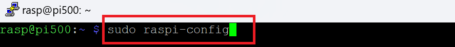
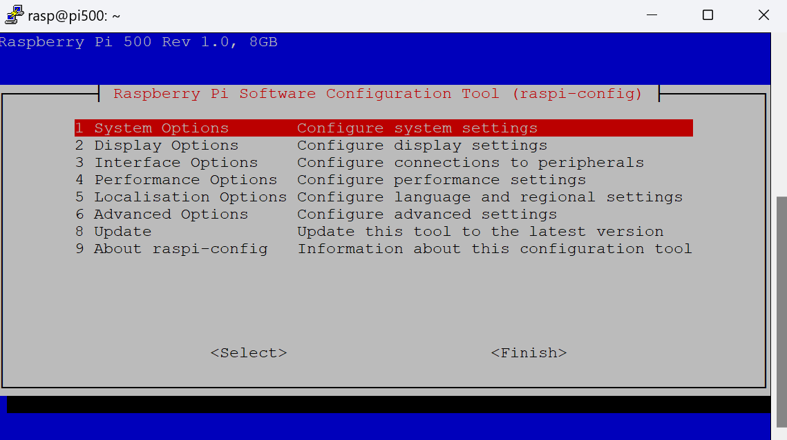
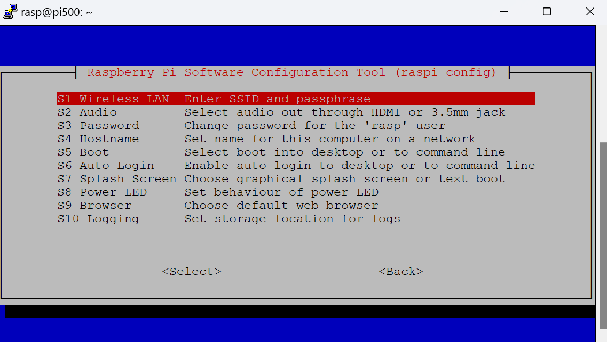
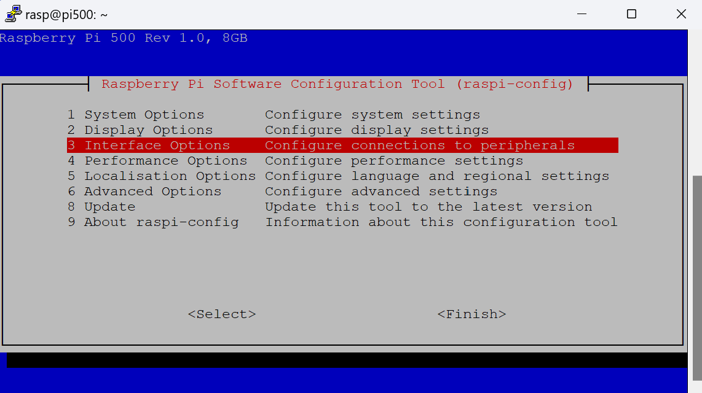
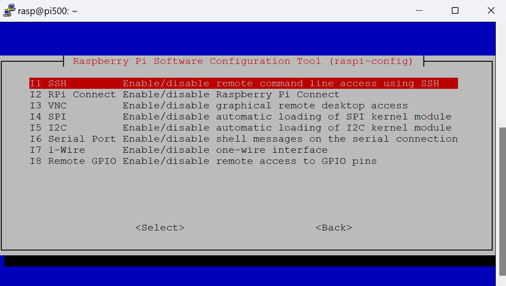
Fase 2: Instalar herramientas en Windows (Winget)
En lugar de buscar programas en internet y descargar instaladores, usaremos Winget (el gestor de paquetes oficial de Windows) desde PowerShell. Nos permite buscar (search) e instalar (install) programas escribiendo simples comandos, garantizando que descargamos la versión oficial y segura.
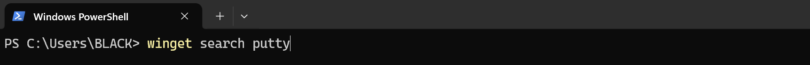
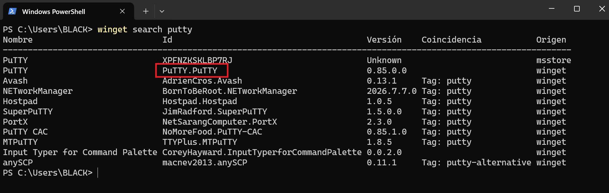
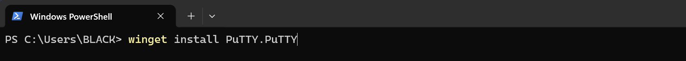
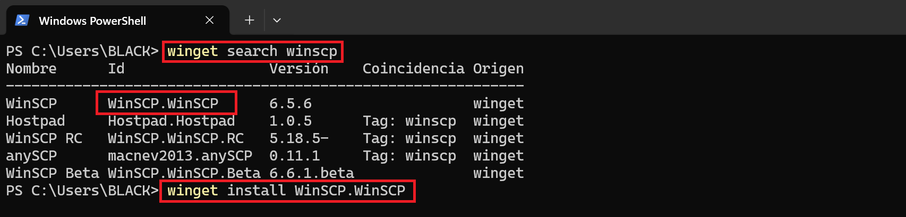
Fase 3: Conexión Remota a la Placa
PowerShell (Nativo)
Sin instalar nada adicional, Windows 10/11 ya soporta el comando SSH directamente desde su terminal nativa.
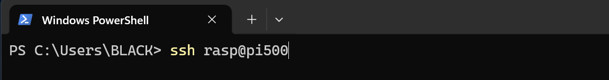
PuTTY
El cliente clásico por excelencia. Permite guardar sesiones, ajustar colores y gestionar claves de seguridad avanzadas.
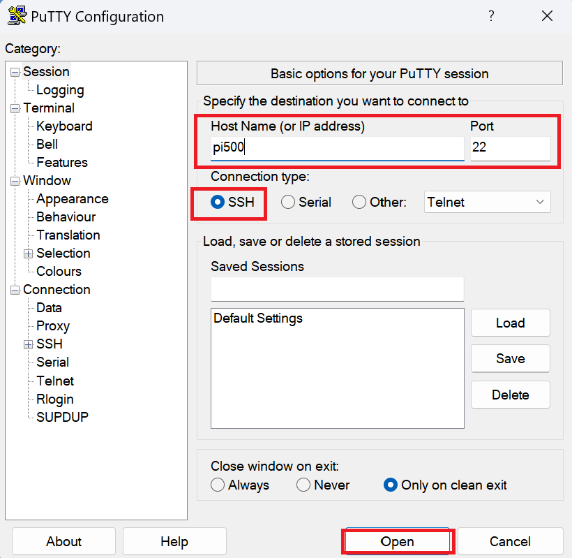
WinSCP (SFTP)
Interfaz gráfica para transferir archivos. Permite arrastrar y soltar scripts en Python desde tu PC a la Raspberry Pi fácilmente.
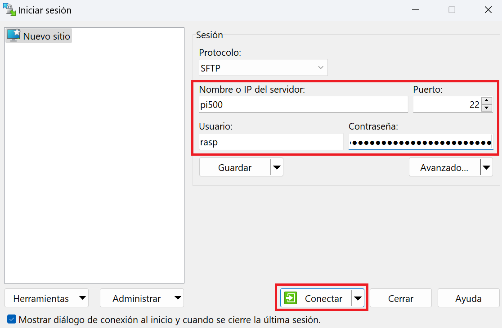
Sensor Ultrasónico HC-SR04
y Semáforo LED
Uso del sensor ultrasónico HC-SR04 para medir distancias y representarlas visualmente mediante 3 LEDs, simulando un sistema de alerta de proximidad basado en rangos matemáticos condicionales.
01 Topología y Componentes
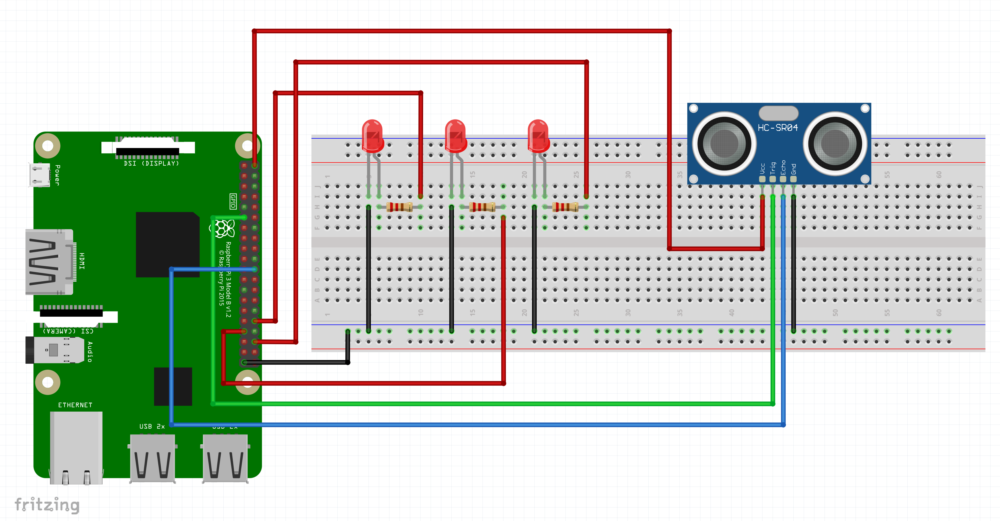
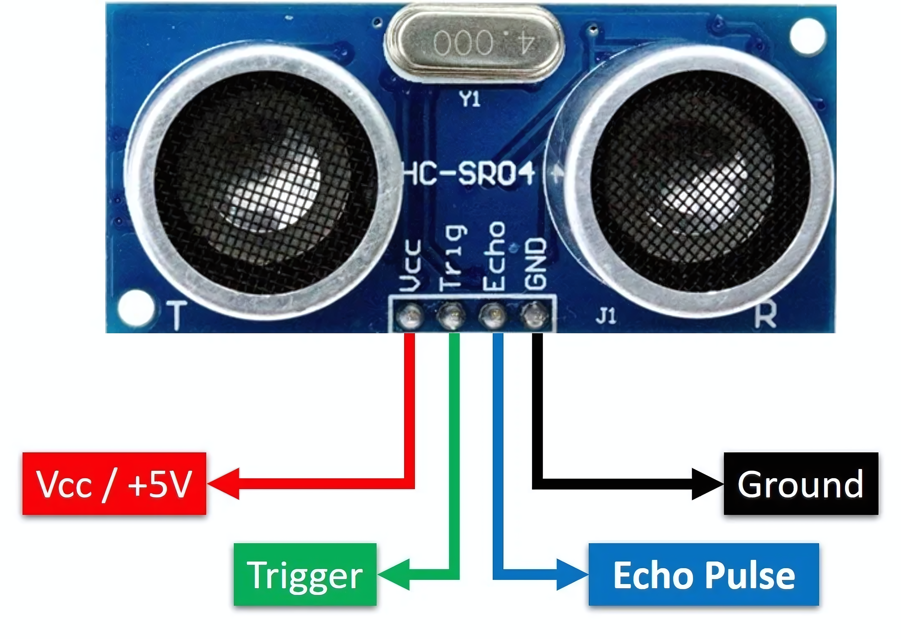
02 Código y Ejecución
import RPi.GPIO as GPIO
import time
# Configuración de los pines
GPIO.setmode(GPIO.BCM)
TRIG = 17 # Pin de Trigger (basado en la v2)
ECHO = 25 # Pin de Echo (basado en la v2)
LED1 = 12
LED2 = 13
LED3 = 16
# Setup de pines de salida y entrada
GPIO.setup([TRIG, LED1, LED2, LED3], GPIO.OUT)
GPIO.setup(ECHO, GPIO.IN)
def mesura_distancia():
# Envío del pulso de Trigger
GPIO.output(TRIG, True)
time.sleep(0.00001) # Pulso de 10 microsegundos
GPIO.output(TRIG, False)
# ¡Clave de seguridad! Inicialización previa para evitar UnboundLocalError
start_time = time.time()
end_time = time.time()
# Medida del tiempo de respuesta
while GPIO.input(ECHO) == 0:
start_time = time.time()
while GPIO.input(ECHO) == 1:
end_time = time.time()
# Cálculo de la distancia
temps_total = end_time - start_time
distancia = (temps_total * 34300) / 2 # Resultado en cm
return distancia
try:
while True:
distancia = mesura_distancia()
print(f"Distància: {distancia:.2f} cm")
# Lógica de LEDs optimizada con if/elif/else
if 0 <= distancia <= 20:
GPIO.output(LED1, 1)
GPIO.output(LED2, 0)
GPIO.output(LED3, 0)
elif 20 < distancia <= 50:
GPIO.output(LED1, 0)
GPIO.output(LED2, 1)
GPIO.output(LED3, 0)
elif 50 < distancia <= 400:
GPIO.output(LED1, 0)
GPIO.output(LED2, 0)
GPIO.output(LED3, 1)
else:
# Caso de error o fuera de rango (<0 o >400)
GPIO.output(LED1, 1)
GPIO.output(LED2, 1)
GPIO.output(LED3, 1)
time.sleep(1)
except KeyboardInterrupt:
print("\nMesura aturada per l'usuari")
GPIO.cleanup()
Traduciendo el código al humano:
while GPIO.input(ECHO) == 0:: El programa se queda atascado en esta línea girando en bucle. Le estamos diciendo: "Mientras no escuches el rebote del sonido, quédate aquí mirando el cronómetro (start_time)". Tan pronto como el sonido regresa (ECHO pasa a 1), el bucle se rompe y pasamos a la siguiente fase.if / elif / else: Es un sistema de semáforo. El ordenador coge la distancia calculada y la hace caer por una cascada de condiciones exclusivas. Si el objeto está a 15cm, entrará en el primer bloque (`if 0 <= distancia <= 20`), encenderá la luz roja, y saltará el resto del código hasta volver a empezar.
03 Análisis de Física y Lógica
El sensor HC-SR04 no mide distancias directamente, mide tiempo. Funciona emitiendo un pitido ultrasónico (inaudible para los humanos) por su cilindro derecho, y escuchando el rebote por el cilindro izquierdo.
Para activar este pitido, debemos enviar una minúscula descarga eléctrica de exactamente 10 microsegundos al pin TRIG (Trigger o Gatillo). Una vez disparado, el sensor eleva el voltaje de su pin ECHO a 5V (estado 1) y lo mantiene así hasta que el sonido regresa.
La Matemática del Sonido
El código usa un cronómetro interno (`time.time()`) para calcular cuánto tiempo ha estado encendido el pin ECHO. Ese número se introduce en esta fórmula crucial:
distancia = (tiempo_total * 34300) / 2
- 34300: Es la velocidad del sonido en centímetros por segundo. Al multiplicar Tiempo x Velocidad, obtenemos la Distancia recorrida.
- / 2: Se divide entre dos porque el sonido hace un viaje de ida (hacia el objeto) y otro de vuelta (hacia el sensor). Solo nos interesa la distancia de ida.
La Lógica del Semáforo Condicional
La parte final del código toma el número calculado en centímetros y lo hace pasar por una criba de condiciones (`if`, `elif`, `else`). Si el número encaja en un rango específico, el programa enciende un LED y apaga forzosamente los otros dos. Esto garantiza que solo haya una luz encendida a la vez:
Resultado Físico (HC-SR04 y LEDs)
Control Manual de
Pantalla LCD 16x2
Manejo avanzado a bajo nivel de una pantalla LCD 16x2 "Clásica" (sin módulo I2C), controlando directamente los canales de datos paralelos (D4 a D7) para inyectar caracteres binarios.
01 Topología de la Pantalla
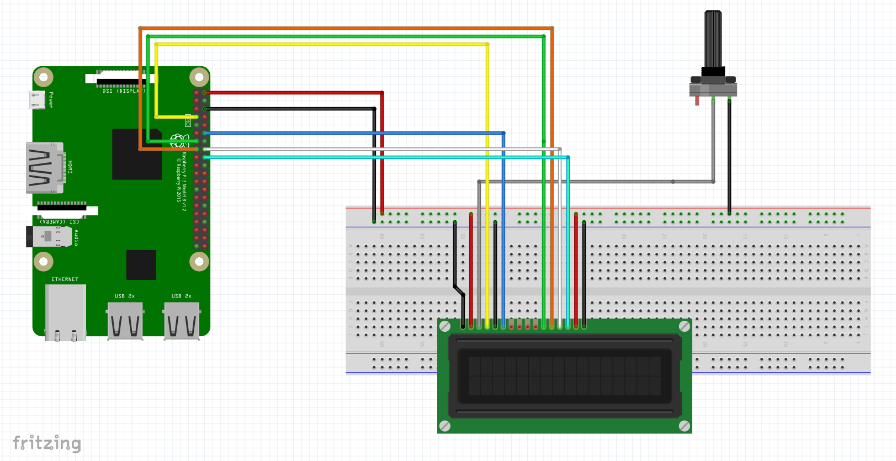
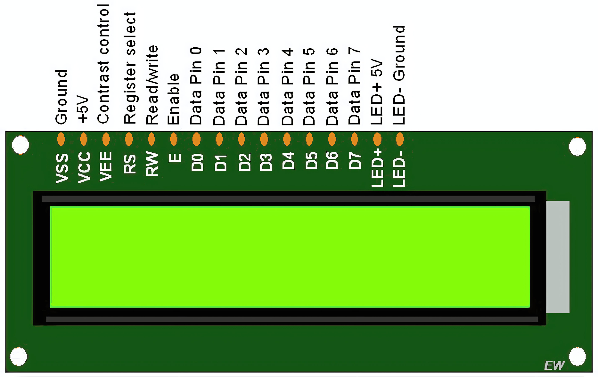
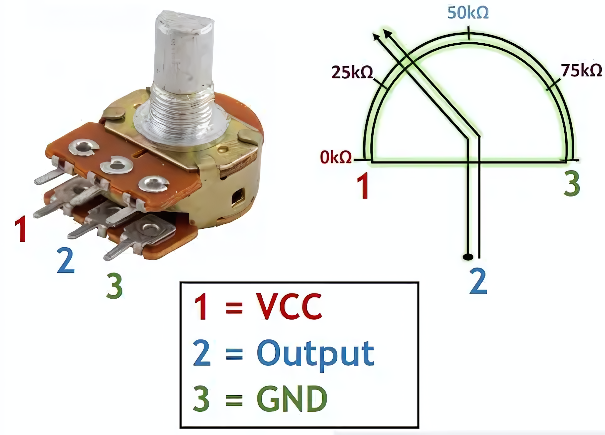
02 Transmisión Cruda HD44780
import time
import RPi.GPIO as GPIO
RS = 4
E = 18
D4 = 27
D5 = 22
D6 = 23
D7 = 24
PAUSA = 0.02
ALFABET = {
"A":(0,0,1,0, 1,0,0,0),
"B":(0,0,1,0, 0,1,0,0 ),
"C":(0,0,1,0, 1,1,0,0),
"D":(0,0,1,0, 0,0,1,0),
"E":(0,0,1,0, 1,0,1,0),
"F":(0,0,1,0, 0,1,1,0),
"G":(0,0,1,0, 1,1,1,0),
"H":(0,0,1,0, 0,0,0,1),
"I":(0,0,1,0, 1,0,0,1),
"J":(0,0,1,0, 0,1,0,1),
"K":(0,0,1,0, 1,1,0,1),
"L":(0,0,1,0, 0,0,1,1),
"M":(0,0,1,0, 1,0,1,1),
"N":(0,0,1,0, 0,1,1,1),
"O":(0,0,1,0, 1,1,1,1),
"P":(1,0,1,0, 0,0,0,0),
"Q":(1,0,1,0, 1,0,0,0),
"R":(1,0,1,0, 0,1,0,0),
"S":(1,0,1,0, 1,1,0,0),
"T":(1,0,1,0, 0,0,1,0),
"U":(1,0,1,0, 1,0,1,0),
"V":(1,0,1,0, 0,1,1,0),
"W":(1,0,1,0, 1,1,1,0),
"X":(1,0,1,0, 0,0,0,1),
"Y":(1,0,1,0, 1,0,0,1),
"Z":(1,0,1,0, 0,1,0,1),
" ":(0,1,0,0, 0,0,0,0),
".":(0,1,0,0, 0,1,1,1)
}
FRASE = "TENGO UN DEFECTO EN LA NARIZ QUE ES MUY MOLESTO QUE ME SUCEDE IGUAL EN VIGO QUE EN MADRID NO SE POR QUE CUANDO ME PONGO MUY NERVIOSO \
ME DA UN PICOR IRRESISTIBLE EN LA NARIZ. SI EN EL COLEGIO HAY UN EXAMEN IMPORTANTE O POR LAS NOTAS ME REGANA MI PAPA ME DA ENSEGUIDA ESE PICOR TAN EXCITANTE \
QUE POR DESGRACIA SIEMPRE ME HACE ESTORNUDAR AH AH ACHIS COMO ME PICA LA NARIZ COMO ME PICA LA NARIZ YA NO LO PUEDO RESISTIR COMO ME PICA LA NARIZ"
def modecomandament(valor):
if valor == False:
GPIO.output(RS, 1)
else:
GPIO.output(RS,0)
GPIO.output(E, 0)
def escriu_a_fila_u():
modecomandament(True) # El que entrarem sera un comandament
escriu4bits(0,0,0,0) # Es posiciona el cursor a l'inici de la filera 1
escriu4bits(0,0,0,0)
def escriu_a_fila_dos():
modecomandament(True) # El que entrarem sera un comandament
escriu4bits(0,0,1,1) # Es posiciona el cursor a l'inici de la filera 2
escriu4bits(0,0,0,0)
def escriu4bits(b1,b2,b3,b4):
GPIO.output(D4, b1)
GPIO.output(D5, b2)
GPIO.output(D6, b3)
GPIO.output(D7, b4)
time.sleep(PAUSA)
GPIO.output(E, 1)
GPIO.output(E, 0)
time.sleep(PAUSA)
def peripheral_loop() :
comptador = 0
for index in range(len(FRASE)):
# Cambio de fila automático cada 16 letras
if index % 16 == 0:
if comptador % 2 == 0:
esborra_la_pantalla()
escriu_a_fila_u()
else:
escriu_a_fila_dos()
comptador += 1
# Envío del caracter buscando su correspondencia binaria
envia_dades_al_display(ALFABET[FRASE[index]])
esborra_la_pantalla()
def esborra_la_pantalla():
modecomandament(True)# El que entrarem sera un comandament
time.sleep(PAUSA)
escriu4bits(0,0,0,0) # Entrem el primer nibble del comandament esborrar pantalla
escriu4bits(1,0,0,0) # Entrem el segon nibble del comandament esborrar pantalla
def envia_dades_al_display(dada):
modecomandament(False) # El que entrarem sera un caracter per escriure en pantalla.
escriu4bits(dada[0],dada[1],dada[2], dada[3])
escriu4bits(dada[4],dada[5], dada[6], dada[7])
def detencio_pantalla():
modecomandament(True)# El que entrarem sera un comandament
escriu4bits(0,0,0,0) # Entrem el Primer nibble del caracter a detencio_pantalla
escriu4bits(0,0,1,1) # Entrem el Segon nibble del caracter a detencio_pantalla
def inicia_pantalla():
modecomandament(True) # Sequencia estricta de inicializacion del controlador HD44780
for index in range(3):
escriu4bits(1,1,0,0)
for index in range(2):
escriu4bits(0,1,0,0)
escriu4bits(1,0,1,1) # Habilitar modo 4-bits y dos filas
escriu4bits(0,0,0,0)
escriu4bits(1,1,1,1)
esborra_la_pantalla()
def peripheral_setup () :
GPIO.setmode(GPIO.BCM)
GPIO.setwarnings(False)
GPIO.setup([RS,E,D4,D5,D6,D7],GPIO.OUT)
GPIO.output([RS,E,D4,D5,D6,D7], 0)
def main () :
peripheral_setup()
inicia_pantalla()
while 1 :
try:
peripheral_loop()
except KeyboardInterrupt:
esborra_la_pantalla()
detencio_pantalla()
break
if __name__ == '__main__' :
main()
Traduciendo el código al humano:
ALFABET = {...}: Es un mapa de traducción creado a mano. Le dice al código exactamente qué secuencia de 1s y 0s debe mandar por los 8 cables para que la pantalla dibuje una "A", una "B", etc.GPIO.output(E, 1); GPIO.output(E, 0): Esto es el pulso ENABLE. Literalmente equivale a pulsar la tecla "ENTER" en tu teclado. Preparamos los datos en los cables D4 a D7, y luego damos este pequeño pulso eléctrico rápido para decirle a la pantalla: "¡Lee esto ahora mismo!".
03 Análisis de Bus en Pistas Paralelo
Las pantallas LCD modernas suelen incorporar un pequeño chip mochila negro en su parte trasera llamado módulo I2C. Este chip recibe las letras de forma serial usando solo 4 cables y hace todo el trabajo sucio. En esta práctica, hemos eliminado ese chip a propósito para aprender cómo se comunica el controlador interno original de la pantalla (Hitachi HD44780) mediante un bus paralelo masivo de 16 pines.
Los Modificadores: RS y E
La pantalla necesita saber si lo que le estamos enviando por los cables es una orden (por ejemplo, "borra la pantalla") o si es una letra ("dibuja una A").
- El pin RS (Register Select): Actúa como una vía de tren. Si está a `0 Voltios`, la pantalla asume que está recibiendo una Orden. Si elevamos el pin RS a `3.3 Voltios`, la pantalla cambia de registro y asume que va a recibir un Caracter para dibujar.
- El pin E (Enable): Es literalmente el botón de "ENTER". Una vez que hemos preparado la letra o la orden en los cables de datos, debemos subir y bajar rápidamente el voltaje del pin Enable (un pequeño pulso lógico) para decirle a la pantalla: "¡Léelo ahora!".
El Modo 4-Bits (Nibbles)
Las letras que enviamos pesan 8 bits (un Byte completo). El método estándar requeriría conectar 8 cables directos desde la Raspberry Pi (D0 a D7), pero eso agotaría rápidamente nuestros pines disponibles.
Para ahorrar cables físicos, configuramos la pantalla en Modo 4-bits (usando solo `D4`, `D5`, `D6` y `D7`). Debido a esto, tenemos que coger la letra de 8 bits (por ejemplo, la A: `0010 1000`), partirla por la mitad, y enviarla como dos paquetes independientes de 4 bits (conocidos como Nibbles) dando dos toques sucesivos al pin Enable.
El Diccionario ALFABET
Puesto que no estamos usando librerías pre-cocinadas de Python para controlar la LCD, no podemos escribir lcd.print("HOLA"). Tuvimos que mapear pacientemente a mano el código binario equivalente a cada letra en el firmware interno de la pantalla. Al iterar sobre la variable FRASE en el bucle principal, el script busca cada letra humana en el diccionario ALFABET y extrae los 8 números binarios correspondientes para encender y apagar los canales lógicos D4-D7 en el orden perfecto.
Resultado Físico (Desplazamiento LCD)
Integración LCD y Distancia
mediante Hilos (Threads)
Uniendo los componentes de las prácticas anteriores. Hacemos que el sensor ultrasónico mida distancias continuamente y la pantalla LCD las muestre en tiempo real, operando de manera independiente para evitar el bloqueo del bucle principal mediante concurrencia paralela.
01 Topología y Código Conjunto
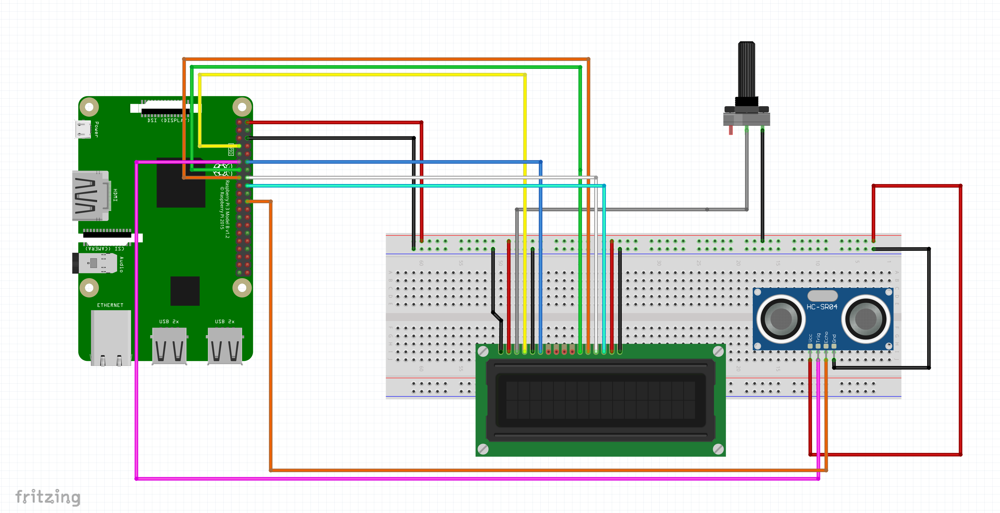
import RPi.GPIO as GPIO
import time
import threading
TRIG = 17
ECHO = 25
RS = 4
E = 18
D4 = 27
D5 = 22
D6 = 23
D7 = 24
PAUSA = 0.02
# Generación dinámica del diccionario binario para letras
def alfabet(caracter):
b_repr = ' '.join(bin(ord(char))[2:].zfill(8) for char in caracter)
st1 = b_repr[0:4]
rst1 = st1[::-1]
st2 = b_repr[4:8]
rst2 = st2[::-1]
mylist=rst1+rst2
mylistint = tuple(int(num) for num in mylist)
return mylistint
GPIO.setmode(GPIO.BCM)
GPIO.setwarnings(False)
GPIO.setup([TRIG,RS,E,D4,D5,D6,D7], GPIO.OUT)
GPIO.setup(ECHO, GPIO.IN)
GPIO.output([RS,E,D4,D5,D6,D7], 0)
# Variable compartida por los dos hilos
distancia = 0
# Señal maestra compartida para detener los hilos de forma limpia
aturar = threading.Event()
def modecomandament(valor):
if valor == False:
GPIO.output(RS, 1)
else:
GPIO.output(RS,0)
GPIO.output(E, 0)
def escriu_a_fila_u():
modecomandament(True)
escriu4bits(0,0,0,0)
escriu4bits(0,0,0,0)
def escriu_a_fila_dos():
modecomandament(True)
escriu4bits(0,0,1,1)
escriu4bits(0,0,0,0)
def escriu4bits(b1,b2,b3,b4):
GPIO.output(D4, b1)
GPIO.output(D5, b2)
GPIO.output(D6, b3)
GPIO.output(D7, b4)
time.sleep(PAUSA)
GPIO.output(E, 1)
GPIO.output(E, 0)
time.sleep(PAUSA)
def esborra_la_pantalla():
modecomandament(True)
time.sleep(PAUSA)
escriu4bits(0,0,0,0)
escriu4bits(1,0,0,0)
def envia_dades_al_display(dada):
modecomandament(False)
escriu4bits(dada[0],dada[1],dada[2], dada[3])
escriu4bits(dada[4],dada[5], dada[6], dada[7])
def detencio_pantalla():
modecomandament(True)
escriu4bits(0,0,0,0)
escriu4bits(0,0,1,1)
def inicia_pantalla():
modecomandament(True)
for index in range(3):
escriu4bits(1,1,0,0)
for index in range(2):
escriu4bits(0,1,0,0)
escriu4bits(1,0,1,1)
escriu4bits(0,0,0,0)
escriu4bits(1,1,1,1)
esborra_la_pantalla()
# Timeout de seguridad para evitar colgar el hilo del sensor
def echo_timeout(estat):
inici = time.time()
while GPIO.input(ECHO) == estat:
if time.time() - inici > 0.03: # Si pasan más de 30 milisegundos, aborta
return True
return False
# Función objetivo del HILO 1 (Sensor)
def mesura_distancia():
global distancia
while not aturar.is_set():
GPIO.output(TRIG, True)
time.sleep(0.00001)
GPIO.output(TRIG, False)
if echo_timeout(0):
distancia = -1
else:
start_time = time.time()
if echo_timeout(1):
distancia = -1
else:
end_time = time.time()
temps_total = end_time - start_time
distancia = (temps_total * 34300) / 2
time.sleep(1)
def lcd(mytext):
esborra_la_pantalla()
escriu_a_fila_u()
for index in range(len(mytext)):
caracter=alfabet(mytext[index])
envia_dades_al_display(caracter)
time.sleep(1)
# Función objetivo del HILO 2 (Pantalla LCD)
def escriure_lcd():
global distancia
while not aturar.is_set():
if distancia != -1:
distancia_print = str(round(distancia,2))
lcd(f"{distancia_print} cm")
else:
lcd("NA")
time.sleep(0.5)
# --------------------------------------------------
# Creació dels fils
# --------------------------------------------------
inicia_pantalla()
fil_1 = threading.Thread(target=mesura_distancia)
fil_2 = threading.Thread(target=escriure_lcd)
fil_1.start()
fil_2.start()
# --------------------------------------------------
# Programa principal
# --------------------------------------------------
try:
while True:
time.sleep(1)
except KeyboardInterrupt:
print("Aturant programa...")
aturar.set()
fil_1.join()
fil_2.join()
GPIO.cleanup()
print("Programa finalitzat")
Traduciendo el código al humano:
fil_1 = threading.Thread(...): En lugar de hacer que el programa mida la distancia y luego la escriba (lo cual pausaría todo si la pantalla tarda en pintar), creamos dos "trabajadores". Uno solo mide (fil_1) y el otro solo escribe (fil_2) trabajando simultáneamente.global distancia: Como los dos trabajadores operan en cajas separadas, usamos esta variable global como un "tablón de anuncios" compartido. El trabajador 1 escribe la nueva distancia en el tablón, y el trabajador 2 la lee del tablón para pintarla en la pantalla.
02 Sincronización Avanzada de Hilos
Hasta ahora, si un proceso fallaba (por ejemplo, el sonido del ultrasónico no regresaba nunca), todo el código se quedaba colgado de forma indefinida esperando en ese punto, paralizando las demás funciones. En esta integración profesional, blindamos la estabilidad separando el problema de la escritura (Sensor) del problema de la lectura (LCD).
El Timeout de Seguridad
La nueva función echo_timeout(estat) es el cinturón de seguridad del hilo del sensor. En las versiones previas, usábamos bucles infinitos como `while GPIO.input(ECHO) == 1:` que esperaban ciegamente a que el sonido volviese.
Si apuntas el sensor hacia el cielo libre, el sonido jamás rebota. Esto congelaría el bucle. El timeout cronometra exactamente 0.03 segundos (el tiempo máximo que tarda el sonido en llegar al límite del sensor y volver). Si expira el tiempo sin respuesta, el hilo rompe el bloqueo, asigna el valor `-1` (Error) y sigue trabajando.
El Evento de Cierre (aturar.set)
En la práctica 1 usamos daemon=True para matar los hilos "a la fuerza" al cerrar el programa principal. Esta técnica básica corrompería nuestra pantalla LCD, dejándola con caracteres residuales si la matamos a mitad de imprimir un texto.
Ahora creamos una bandera oficial: aturar = threading.Event(). Todos los hilos funcionan bajo la premisa while not aturar.is_set():. Al pulsar Ctrl+C, el programa padre activa esta bandera globalmente, lo que ordena a los hilos terminar pacíficamente la frase actual en la que estaban trabajando y unirse (`.join()`) para cerrar la puerta del hardware limpiamente con `GPIO.cleanup()`.
...
# Hilo 1 (Sensor)
distancia = 12.5
...
# Hilo 2 (LCD)
lcd(f"{distancia} cm")
La Variable Global (Memoria Compartida)
Dado que los Hilos operan en contenedores aislados de tiempo pero viven dentro de la misma memoria RAM, la comunicación entre ellos se realiza declarando una variable compartida global distancia. El "Hilo 1" se dedica en exclusiva a sobreescribir este bloque de memoria continuamente, mientras el "Hilo 2" se dedica a leer este mismo bloque para actualizar los datos en la pantalla, logrando una arquitectura de concurrencia impecable.
Resultado Físico (LCD Dinámica con Hilos)
Estación de Sensores
Meteorología y Distancia
En esta quinta práctica consolidamos los conceptos previos mediante la creación de un sistema unificado capaz de medir parámetros físicos de su entorno (temperatura, humedad y proximidad espacial) y reportar los datos en una pantalla LCD en tiempo real.
Adaptación a Sistemas Modernos: A nivel de software, esta práctica analiza los nuevos paradigmas de seguridad introducidos en sistemas basados en Debian 13 (Trixie). Evaluaremos cómo sortear las restricciones del estándar PEP 668 sobre el gestor de paquetes de Python y aplicaremos arquitecturas de hilos paralelos para gestionar las esperas de los módulos letárgicos.
01 Topología y Componentes
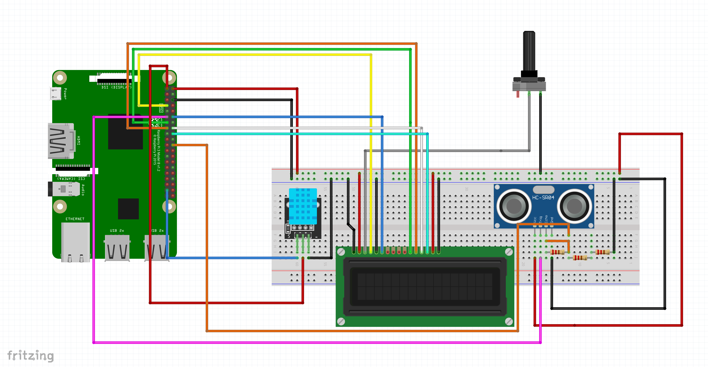
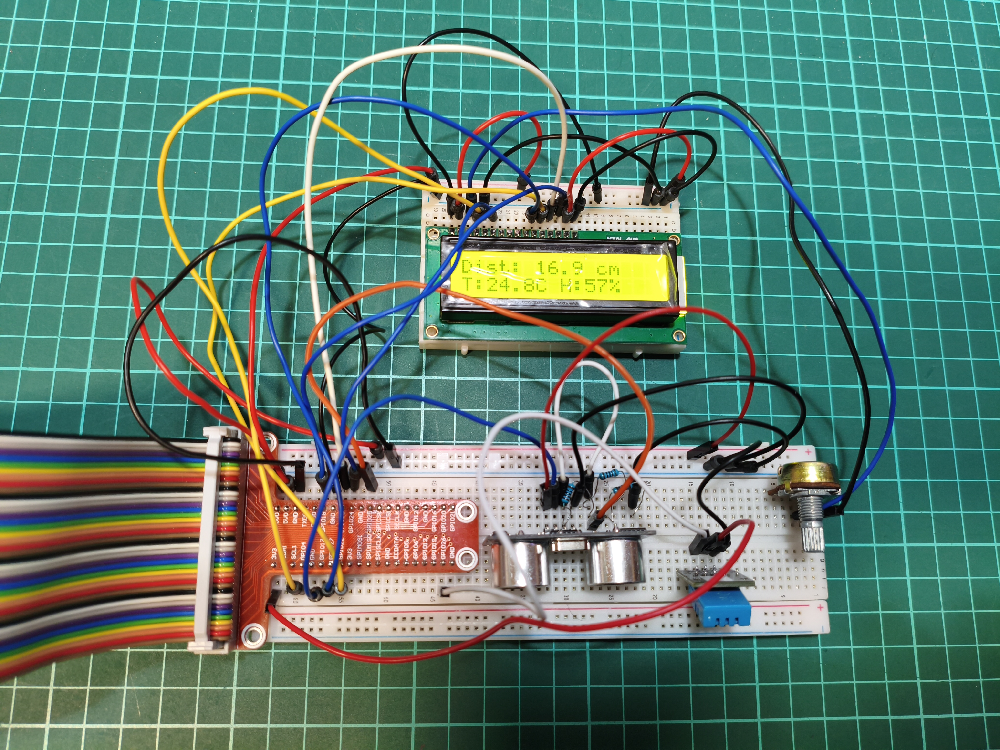
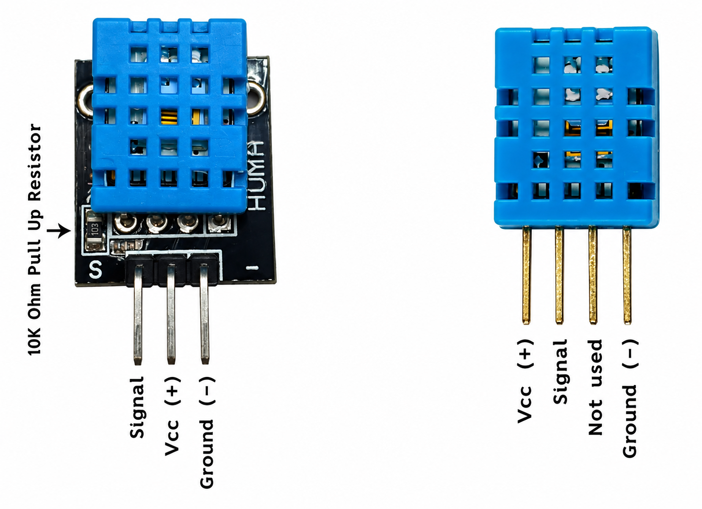
02 Protección Eléctrica y Electrónica Aplicada
La convivencia de componentes que operan a diferentes niveles lógicos (5V vs 3.3V) nos obliga a implementar salvaguardas en hardware. Inyectar directamente una señal de 5V en un procesador diseñado para 3.3V degradará sus transistores y causará fallos irrecuperables.
Reducción Lógica: Divisor de Voltaje
A diferencia del pin TRIG (que acepta órdenes de 3.3V de la Pi sin quejarse), el pin ECHO del HC-SR04 dispara ecos acústicos de retorno a unos agresivos 5V. Protegemos el pin de escucha de la placa (GPIO 25) con un Divisor de Voltaje de tres fases:
- La señal cruda de 5V abandona el pin ECHO e impacta en una resistencia de frenado (R1: 1kΩ).
- Justo al salir de R1, la señal ha caído a 3.3V. Aquí intersecamos el cable que se dirige seguro hacia la Raspberry Pi.
- El exceso de energía restante se deriva hacia GND a través de dos resistencias en serie adicionales (R2: 2kΩ) cerrando el lazo.
LCD y Drenador Abierto
La pantalla requiere alimentación principal a 5V para que sus cristales se opaquen, pero usa una arquitectura de Drenador Abierto para las comunicaciones de datos. La pantalla "tira a masa" las señales (las manda a 0V) en lugar de inyectar 5V, lo que la hace compatible por diseño con nuestra Raspberry Pi de 3.3V.
- Contraste (V0): El potenciómetro actúa como una resistencia ajustable entre 5V y GND, regulando el voltaje microscópico que inyecta en el pin 3. Sin esto, los cristales son transparentes.
- Forzar Escritura (RW): El pin 5 define si la placa lee o escribe. Al aterrizarlo directamente a GND, bloqueamos la pantalla en un modo de "solo escucha".
- Soldaduras: Asegúrate de que los pines metálicos estén soldados a la placa verde de la pantalla. Si solo están metidos en los agujeros, no hará contacto.
El Sensor DHT11 y la Resistencia Pull-up
Este sensor es extremadamente dócil. Aliméntalo desde la línea de 3.3V (NO a 5V), conecta el pin negativo a tierra (GND) y el pin de señal central al GPIO 26 de la Raspberry Pi. Internamente, las versiones con placa PCB (como la del kit) ya incluyen una resistencia Pull-up de 10kΩ soldada de fábrica que mantiene la línea de datos estable en estado ALTO (High) hasta que el sensor decide "hablar".
03 Gestión de Entornos y Librerías en Linux
Las arquitecturas recientes del sistema operativo (Debian 12+ Bookworm/Trixie) han implementado el estándar de seguridad PEP 668. Esta norma bloquea intencionalmente a pip (el instalador de Python) para que los usuarios no puedan inyectar librerías experimentales directamente en las arterias vitales del sistema, forzando un error del tipo externally-managed-environment.
Para un entorno didáctico o de prototipado donde entendemos el riesgo, prepararemos el sistema ejecutando la siguiente cadena de rutinas para puentear de forma controlada estas restricciones:
Paso 1: Instalación de cabeceras de compilación
Dotamos a la placa de las herramientas C++ necesarias para compilar código desde cero.
sudo apt update && sudo apt install python3-pip python3-dev build-essential -y
Paso 2: Transición a libgpiod
Linux ha desaprobado el uso del sistema sysfs para manipular pines GPIO. Instalamos el nuevo motor subyacente.
sudo apt install gpiod libgpiod-dev python3-libgpiod -y
Paso 3: Excepción PEP 668 para librerías Legacy
Usamos explícitamente el parámetro --break-system-packages para ordenar la instalación global de la capa de compatibilidad.
pip3 install rpi-lgpio --break-system-packages
Paso 4: Adquisición de la capa CircuitPython
Instalamos el software mantenido por Adafruit que encapsula las lecturas del DHT11.
pip3 install adafruit-circuitpython-dht Adafruit-Blinka --break-system-packages
04 Arquitectura de Código: Multithreading
La lógica de este programa se enfrenta a un desafío de temporalidad arquitectónica: el sensor ultrasónico reacciona en microsegundos, pero el módulo climático DHT11, por su naturaleza química resistiva, requiere un lapso crítico de recarga de casi dos segundos entre lecturas.
Si programáramos esto en secuencia recta (uno detrás de otro), la espera de dos segundos que requiere el sensor del clima congelaría la pantalla, bloqueando la lectura de proximidad.
La Solución Asíncrona
Deconstruimos el programa en tres subrutinas autónomas y contratamos a tres "trabajadores virtuales" (Hilos) para operarlas. Un hilo vigilará el radar de proximidad a alta frecuencia, el segundo hilo auscultará el clima lentamente y el tercer hilo pintará los resultados en el LCD. Todos depositarán sus descubrimientos en buzones de Memoria Compartida Global para garantizar la cohesión del sistema.
import RPi.GPIO as GPIO
import time
import threading
import board
import adafruit_dht
# --------------------------------------------------
# Configuración de pines (Nomenclatura BCM)
# --------------------------------------------------
TRIG = 17
ECHO = 25
RS = 4
E = 18
D4 = 27; D5 = 22; D6 = 23; D7 = 24
PAUSA = 0.02
# Configuración del sensor DHT11 en el GPIO 26
dht_sensor = adafruit_dht.DHT11(board.D26)
# Variables globales compartidas por los tres hilos
distancia = 0
temperatura = 0.0
humedad = 0.0
aturar = threading.Event() # Interruptor maestro para apagar el sistema limpiamente
# --------------------------------------------------
# Lógica binaria de la Pantalla LCD
# --------------------------------------------------
def alfabet(caracter):
b_repr = ' '.join(bin(ord(char))[2:].zfill(8) for char in caracter)
st1 = b_repr[0:4]
rst1 = st1[::-1]
st2 = b_repr[4:8]
rst2 = st2[::-1]
mylist = rst1 + rst2
return tuple(int(num) for num in mylist)
GPIO.setmode(GPIO.BCM)
GPIO.setwarnings(False)
GPIO.setup([TRIG,RS,E,D4,D5,D6,D7], GPIO.OUT)
GPIO.setup(ECHO, GPIO.IN)
GPIO.output([RS,E,D4,D5,D6,D7], 0)
def modecomandament(valor):
GPIO.output(RS, 0 if valor else 1)
GPIO.output(E, 0)
def escriu_a_fila_u():
modecomandament(True); escriu4bits(0,0,0,0); escriu4bits(0,0,0,0)
def escriu_a_fila_dos():
modecomandament(True); escriu4bits(0,0,1,1); escriu4bits(0,0,0,0)
def escriu4bits(b1,b2,b3,b4):
GPIO.output(D4, b1); GPIO.output(D5, b2); GPIO.output(D6, b3); GPIO.output(D7, b4)
time.sleep(PAUSA)
GPIO.output(E, 1); GPIO.output(E, 0)
time.sleep(PAUSA)
def esborra_la_pantalla():
modecomandament(True)
time.sleep(PAUSA)
escriu4bits(0,0,0,0); escriu4bits(1,0,0,0)
def envia_dades_al_display(dada):
modecomandament(False)
escriu4bits(dada[0], dada[1], dada[2], dada[3])
escriu4bits(dada[4], dada[5], dada[6], dada[7])
def inicia_pantalla():
modecomandament(True)
for _ in range(3): escriu4bits(1,1,0,0)
for _ in range(2): escriu4bits(0,1,0,0)
escriu4bits(1,0,1,1); escriu4bits(0,0,0,0); escriu4bits(1,1,1,1)
esborra_la_pantalla()
# --------------------------------------------------
# Tarea HILO 1: Leer Distancia
# --------------------------------------------------
def echo_timeout(estat):
inici = time.time()
while GPIO.input(ECHO) == estat:
if time.time() - inici > 0.03: return True
return False
def mesura_distancia():
global distancia
while not aturar.is_set():
GPIO.output(TRIG, True)
time.sleep(0.00001)
GPIO.output(TRIG, False)
if echo_timeout(0):
distancia = -1
else:
start_time = time.time()
if echo_timeout(1): distancia = -1
else:
distancia = ((time.time() - start_time) * 34300) / 2
time.sleep(0.5)
# --------------------------------------------------
# Tarea HILO 2: Leer Temperatura y Humedad
# --------------------------------------------------
def mesura_dht():
global temperatura, humedad
while not aturar.is_set():
try:
t = dht_sensor.temperature
h = dht_sensor.humidity
if t is not None and h is not None:
temperatura = t
humedad = h
except RuntimeError: pass # Hardware propenso a fallos, iteramos limpiamente
except Exception as error:
dht_sensor.exit()
raise error
time.sleep(2.0)
# --------------------------------------------------
# Tarea HILO 3: Actualizar Pantalla y Consola
# --------------------------------------------------
def escriure_lcd():
global distancia, temperatura, humedad
while not aturar.is_set():
txt1 = f"Dist: {round(distancia,1)} cm" if distancia != -1 else "Dist: Fora rang"
txt2 = f"T:{round(temperatura,1)}C H:{round(humedad,1)}%"
# Rellenar espacios (16 huecos) para sobreescribir fotogramas fantasma
txt1 = txt1.ljust(16)
txt2 = txt2.ljust(16)
print(f"[{txt1}] | [{txt2}]")
esborra_la_pantalla()
escriu_a_fila_u()
for char in txt1: envia_dades_al_display(alfabet(char))
escriu_a_fila_dos()
for char in txt2: envia_dades_al_display(alfabet(char))
time.sleep(1)
# --------------------------------------------------
# Ejecución Principal y Gestión de Eventos
# --------------------------------------------------
inicia_pantalla()
fil_1 = threading.Thread(target=mesura_distancia)
fil_2 = threading.Thread(target=escriure_lcd)
fil_3 = threading.Thread(target=mesura_dht)
fil_1.start()
fil_3.start()
time.sleep(2) # Retardo inicial de cortesía para estabilización del circuito DHT11
fil_2.start()
try:
print("Programa ejecutandose. Presiona CTRL+C para detener.")
while True:
time.sleep(1)
except KeyboardInterrupt:
print("\nDesplegando paracaídas de cierre seguro...")
aturar.set()
fil_1.join()
fil_2.join()
fil_3.join()
dht_sensor.exit()
GPIO.cleanup()
print("Módulos terminados. GPIO liberado.")
Traduciendo el código al humano:
adafruit_dht.DHT11(board.D26): El esfuerzo cognitivo de calcular impulsos resistivos es subrogado a una librería especializada de Adafruit. Esta encapsulación nos devuelve mediciones matemáticas limpias directamente a las variables, ocultando la ingeniería de pulsos detrás de una simple llamada.try... except RuntimeError: La gestión elegante de fallos. El protocolo de datos One-Wire del DHT11 sufre a menudo desincronizaciones frente al Kernel multinúcleo de Linux. En lugar de permitir un cierre estrepitoso del programa, el bloqueexceptabsorbe el impacto de un dato corrupto, lo ignora silenciosamente (pass) y exige una nueva lectura fresca.txt1.ljust(16): Un recurso de optimización gráfica. Al imprimir fotogramas dinámicos de longitud variable (e.j., de "100.5 cm" a "8.2 cm"), las letras de la lectura anterior pueden perdurar en la matriz, creando textos híbridos o "fantasmas". Este comando rellena forzosamente la línea completa con espacios vacíos a la derecha, barriendo cualquier residuo óptico sin necesidad de emitir el comando agresivo (y visualmente parpadeante) de "borrado total de pantalla".
Resultado Físico (Estación Consolidada)
05 Debugging (Solución de Problemas Frecuentes)
Es muy común que en el primer intento la pantalla no muestre texto, a pesar de que el código no arroje ningún error y la terminal indique que los datos se están midiendo correctamente. Revisa esta lista, de mayor a menor probabilidad, si te enfrentas al temido "bloqueo verde":
1. El Ajuste del Contraste
La causa del 90% de los sustos. La pantalla LCD requiere un nivel de voltaje exacto en el pin V0 (operado por tu Potenciómetro). Si es incorrecto, el cristal no dejará pasar la luz y será transparente (invisible).
Solución: Mientras el código se está ejecutando, usa un destornillador y gira lentamente la ruleta de extremo a extremo. Llegará un punto milimétrico exacto donde, de repente, emergerán las letras.
2. Soldaduras "Fantasma"
Las pantallas LCD que no tienen módulo I2C requieren soldar una tira de 16 pines a su base verde.
Solución: Si simplemente has pasado los pines de metal por los agujeros de la pantalla y la has apoyado en la placa de pruebas ("protoboard"), el contacto microscópico falla. La luz de fondo (pines 15 y 16) encenderá fácilmente, pero las comunicaciones de datos requerirán que derritas estaño en cada uno de los puntos para sellarlos permanentemente.
3. El Pin Rebelde (RW)
El quinto pin de la pantalla (marcado como RW: Read/Write) indica si la placa envía o recibe datos. En este proyecto solo enviamos.
Solución: Debe haber un cable físico yendo desde el Pin RW directamente hacia la línea azul/negra de Tierra (GND). Si ese cable está suelto o lo olvidaste, la pantalla se queda congelada "escuchando" algo que nunca llegará y jamás imprimirá ni una sola letra.
4. El Reseteo de Hardware
Las protoboards no son perfectas. Es muy común que, sin darte cuenta, conectes el cable en la fila equivocada y la corriente fluya a la nada misma.
Solución: El truco definitivo de los ingenieros eléctricos. Extrae absolutamente todos los cables, levántate a beber agua y, cuando regreses, reconecta el circuito paso a paso desde cero. El 95% de los fallos técnicos que no dejan traza de código se solucionan reconstruyendo la topología de red física.